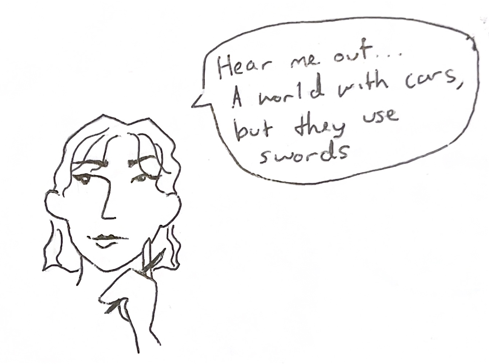

I went into Plot Factory with no knowledge or notion of what the site would be like. Someone suggested the site in class and briefly mentioned that it is made to help you organize a novel, which piqued my interest. I have unsuccessfully tried to write a novel myself, and one of the most difficult parts of the process was the organization of it all. When you are creating a novel, particularly one in a fantasy universe, you have to think of everything. Literally everything, from the plot to the way the society is governed to whether the society has plumbing or not. One of my biggest mistakes when I started my novel that I began for a Fiction Writing class was that I did not set a definitive time frame. If you are creating a fantasy world, a time period is often not about the dates of the years in which your novel takes place, instead the time period is found in the technology. In my novel I had soldiers driving in cars but fighting with swords. Writing it out I see how silly that was, but when I set out to write my novel I imagined warriors clashing with enemies in a battle of good and evil with swords and shields and magic, and the cars were just a vehicle to get through the kingdom that I did not put much thought into. But alas, you must think of everything.
Plot Factory enables that. The first step to using the site is to create a universe. This is separate from the story of your novel, because the universe is just the place and time where and when the story happens. Think Leigh Bardugo’s Grishaverse, a world with several kingdoms in which people called Grisha have magical powers. Within this Grishaverse, she has several different novels, some of which have connected stories, and others that don’t.
So I created my universe, and upon doing so, I was prompted to set not only the setting but also the time (which as I mentioned above, is crucial. Like, do they have electricity or do they read letters by the light of a candle.) There is also a prompt to fill out laws, which I thought was interesting. In my mind this could mean one of two things: laws as in what governs the society of my universe, or, the laws of the magic system. If you are using Plot Factory for a non-fantasy story, laws is the perfect section to put research on the government in which your story takes place and ensure you are following the rules of it, or breaking them if your characters lean to the criminal side. But if you are writing a fantasy, like me, while government rules are important, so are the rules of the system of magic. Another thing I learned in my Fiction Writing class is that in order for your reader to believe in your world and its magic, there must be laws. Where does the magic come from? What are its limitations? (There must be limitations, otherwise your story will have no order or sense at all).
Once you have created the universe for your story, you can begin the story. However, I would recommend first filling out the other sections, including characters, places, objects, and elements. As I mentioned, when you create a fantasy world, you have to think of everything. Filling out these sections is a great feature to help keep yourself sane and remember all of the elements you want to include and shape your story with. Each section gives lots of room for details, like, for example, writing the habits and mannerisms of each character. Details like that might seem small, but can be crucial in your novel.
While I was impressed with all of these features, they followed what I hoped for and expected from the site. What I was not expecting, however, is that you can write your novel directly on the site. You can even label which character is narrating each chapter, and it is super easy to do so.
Perhaps my favorite feature of this site, and another feature I was not expecting to find, is the Statistics Section. Not only can you organize all of your ideas, from characters to settings, but you can write your novel and monitor your progress all within the same site. On top of that, there is a forum element of the website, where you can ask other writers for advice on questions you have with your own work. One example forum I read was posted by a writer who wanted to introduce a hidden villain, but they were not sure exactly how to do so in an effective way for the plot. Another writer responded with advice on how hidden villains are often worked into a story, stating that the focus is typically put on another character in order to successfully hide the villain.
One fallback of the site is that you are limited with the basic membership, and you have to upgrade for certain features. However, this was not surprising because there is incredibly minimal ad space on the site, which I appreciate because it is nice not to be bombarded with ads when you are working on a novel and trying to focus on your work. Also, one of the few limitations is that you cannot create more than one universe or story within that universe. Honestly, I would not think it would be wise to work on two different novels simultaneously, so this does not feel like too strong of a restriction.
After toying with the site for a while and inputting my own work, I think this is a great site to use if you are looking for a way to organize and write your novel. It not only has an easy-to-work and aesthetically pleasing layout, but the site is comprehensive and has several great features to make writing a novel an easier task. As someone who has been overwhelmed with the gravity of creating an entire novel, this site seems like it would genuinely ease the process and help me along the way. I did not know sites like this existed, and I am glad to have found this. Once I get past the mental block of beginning a novel, I will be sure to return to Plot Factory.
